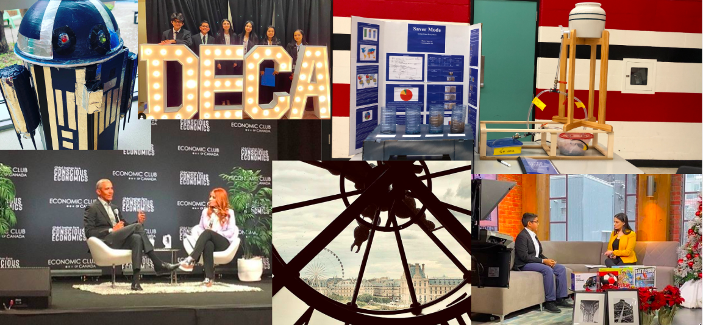

A b o u t M e
With a passion for business, photography and music, I find myself to be a balanced leader in the community. Through academics, athletics and arts, I am able to succeed on a daily basis. Many opportunities have been given to me, in which I have taken to my advantage to become a better self. As Paul Brandt once said, "Don't tell me the sky is the limit when there are footprints on the moon". But I don't want to stop there. With the people in my life that have helped me achieve great things, I can soar, to the sky, to the moon and to the stars.
You can reach me at rajan.ag005@gmail.com or at my iPhone: 1+(647)-973-4401!
